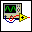
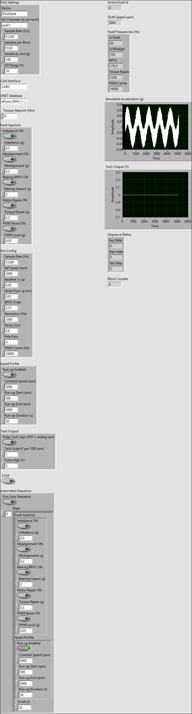
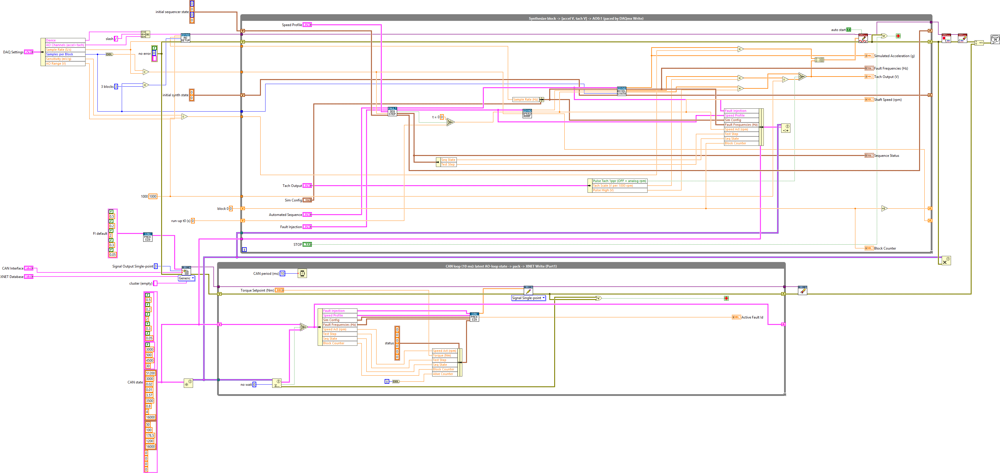

eDyno NVH simulator + CAN (eDyno_NVH_PoC.dbc, CAN FD) - copy of eDyno NVH Accel + RPM Simulator.vi plus a PARALLEL CAN loop.
AO loop (paced by DAQmx Write, one block per iteration): runs the fault sequencer, synthesizes the block and publishes the applied state (faults, speed profile, sim config, fault frequencies, speed, test step, sequence state, block counter) to a notifier.
CAN loop (10 ms): takes the latest notification, packs the eDyno_NVH_PoC signals and writes them through an NI-XNET Signal Output Single-point session on CAN Interface (PXIe-8510 Port1); NI-XNET transmits each frame at its DBC cycle time. Alive counters step on every CAN loop iteration. The CAN loop stops when the AO loop ends and the notifier is released, or on an XNET error.
Manual: Run Auto Sequence OFF, toggle Fault Injection / Speed Profile. Automated: Run Auto Sequence ON - each Steps row is applied for Dwell (s) with the run-up restarted; after the last row the panel values apply (Seq State 3 = AutoDone).
Setup: import eDyno_NVH_PoC.dbc as XNET alias eDyno_NVH_PoC (CAN FD+BRS, 500 kbit/s / 2 Mbit/s). FlexLogger logs on Port2 (loopback).


